Luar do Sertão Hotel
Telefone para contato: +55 (88) 3451-2028 / (88) 99604-0425(Tim)
Conforto e tranquilidade da serra, aventura e descontração em várias atividades.
Diversificação é o diferencial do Hotel Luar do Sertão.
Localizado na Serra do Juá, em Quixadá, no Sertão Central cearense,
o empreendimento proporciona a perfeita interação com a natureza.
A área total do hotel Luar do Sertão é de 122 hectares, dispõe de 4 açudes com pesca
liberada para hospedes, uma caverna e 4 trilhas demarcadas
com graus crescentes de dificuldade, um deleite para apreciadores de ecoturismo.
Nos períodos de chuva, o hóspede ainda curte banhos em piscinas naturais (Veja em lazer
várias outras atividades).
 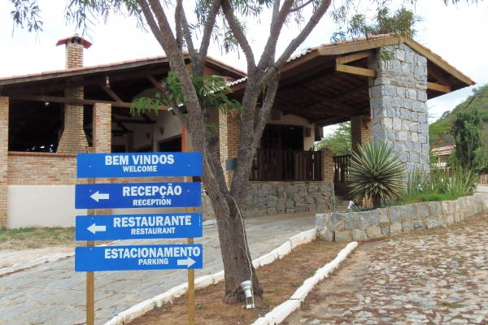
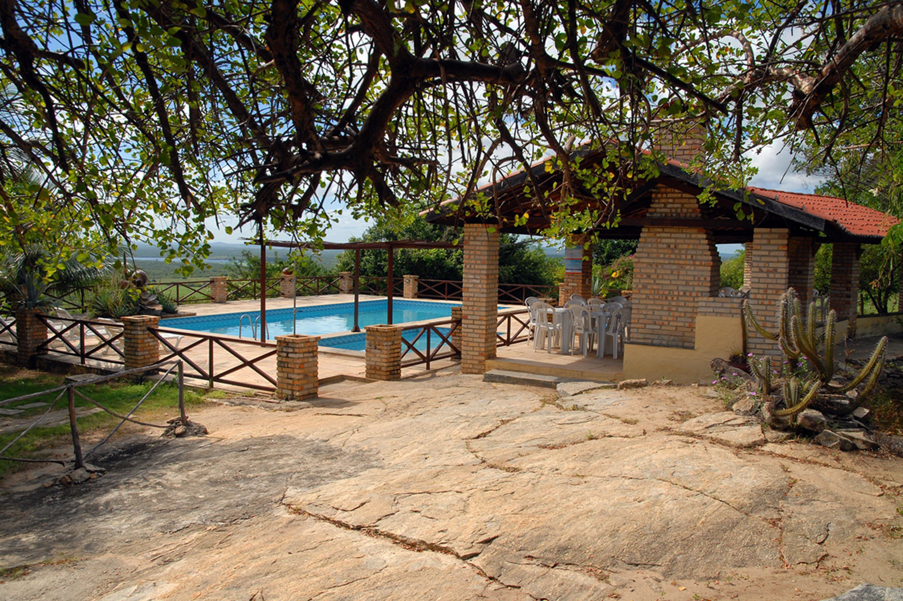
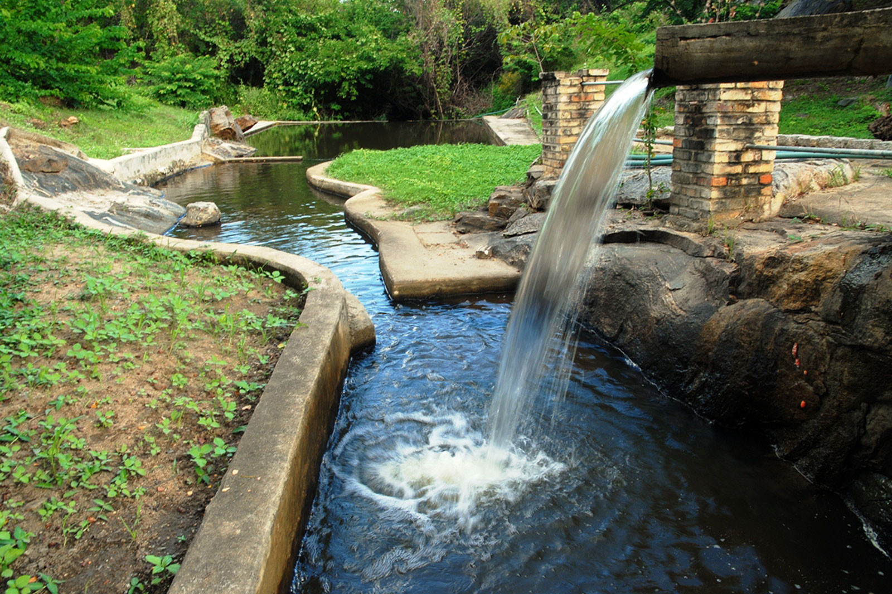
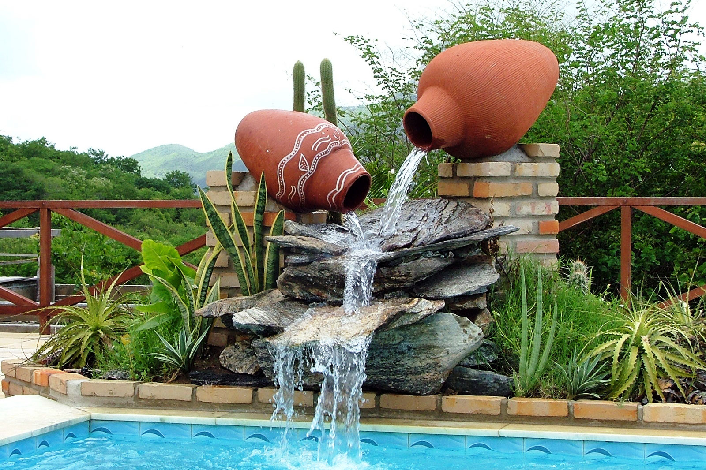
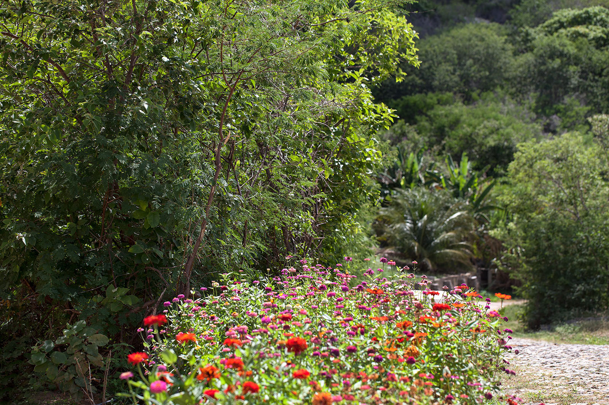
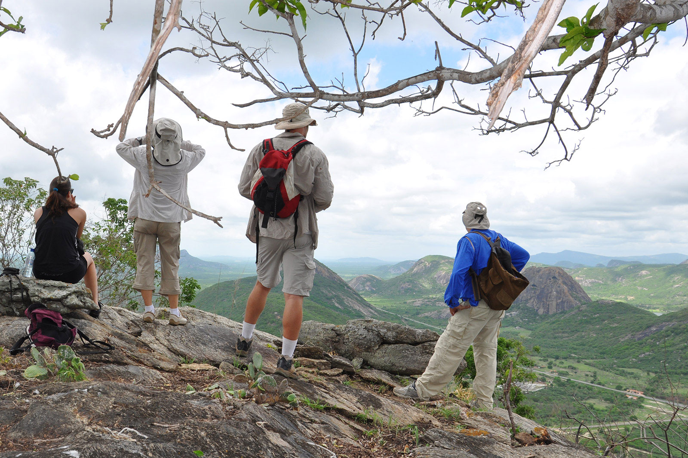
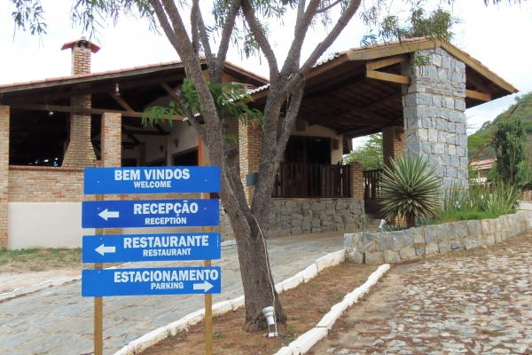
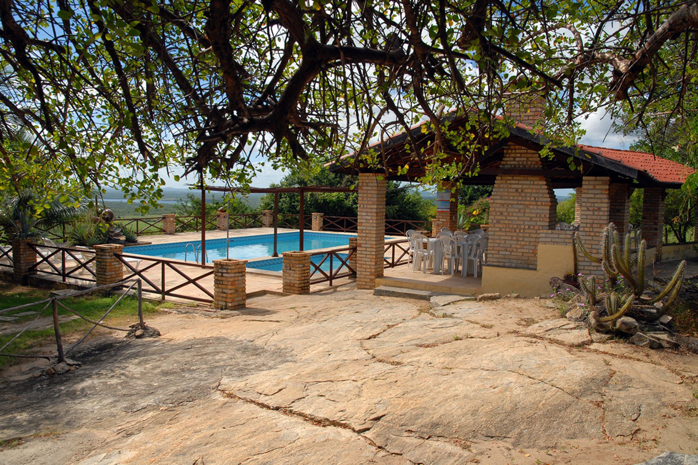
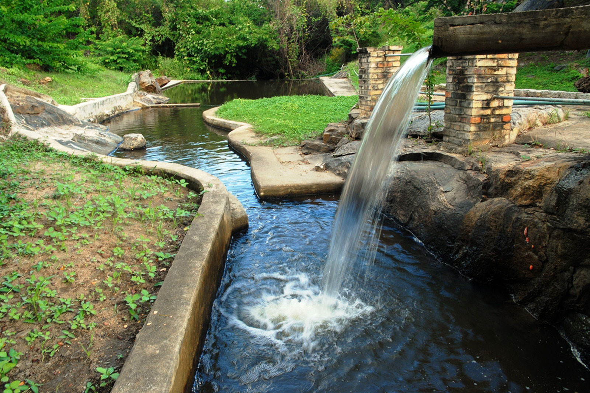
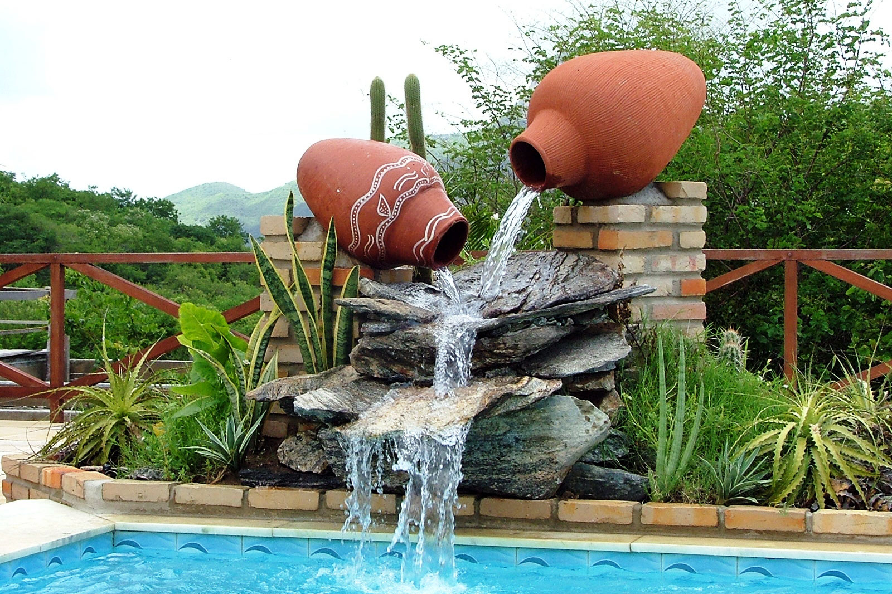
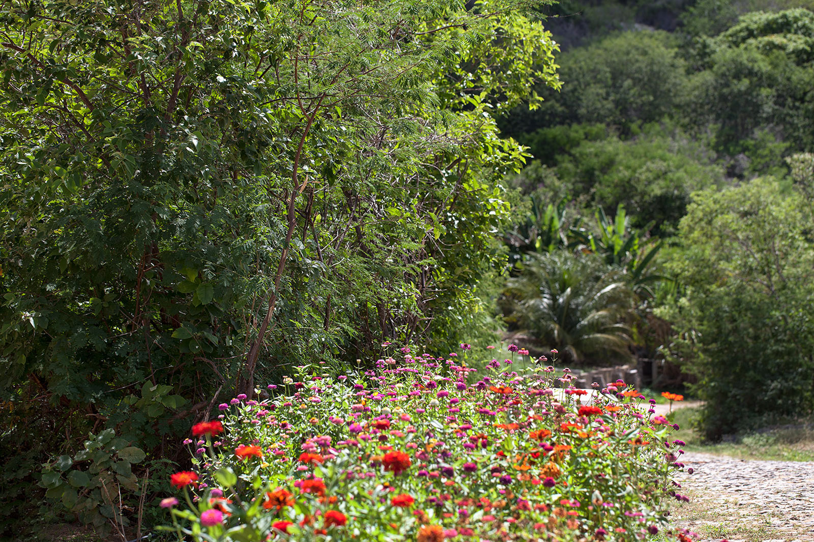
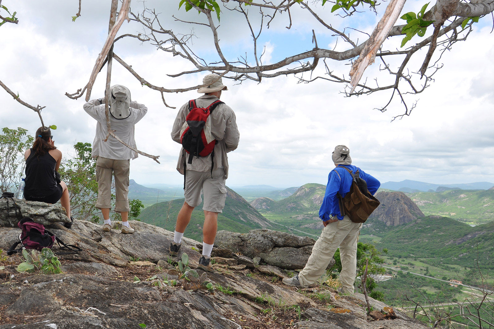
 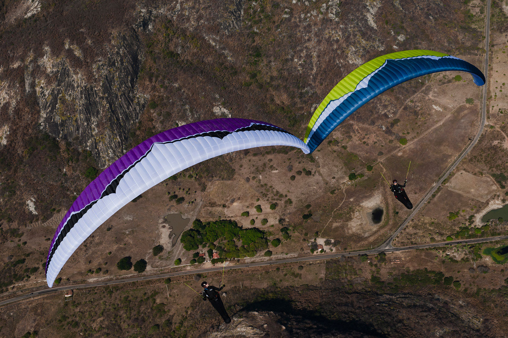
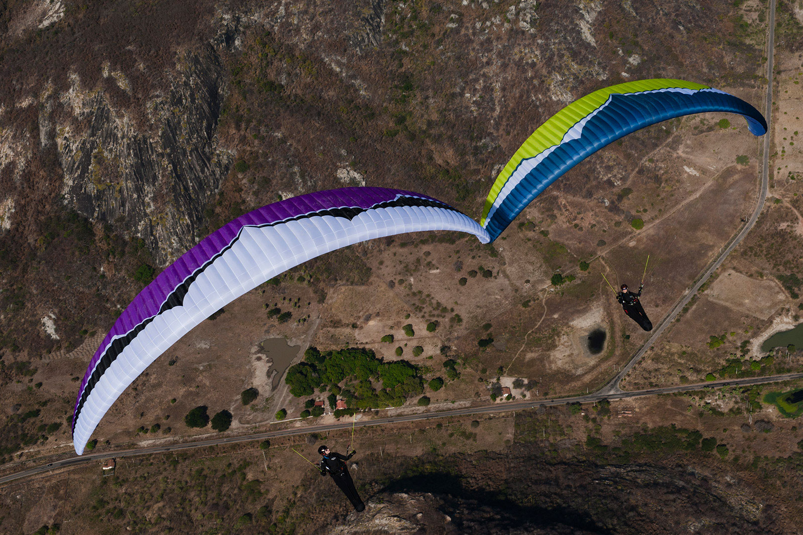

Hotel Luar do Sertão - Quixadá, Ceará, Brasil - Tel. +55 88 3451.2028 - 88 99604.0425 - Todos os direitos reservados à Wemerson Monteiro Damasceno